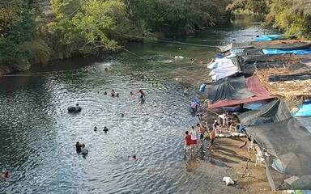
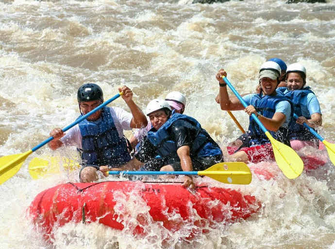
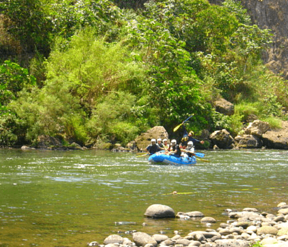

Book a Trip

Supīdo
Reservation
Reservations can be made by calling the following number 55-6666-6666 or clicking on the section below
Adventure Awaits You!

With more than 10 kilometers in length, it is considered a river for experts with level III and IV rapids. It is located 20 minutes from Tequesquitengo

Located in Tlapacoyan, it is perhaps the most emblematic rafting river in Veracruz. Cataloged with level II and III, it has four different routes (El Encanto, Las Pirámides, Alto Filo, La Palmilla); Along them you can make stops to discover the incredible landscapes of the region and visit the Totonac vestiges of Cuajilote and Vega de la Peña.

Just over 40 kilometers from Xalapa, in this municipality you will find options for both beginners in the Antigua River, level II and III, and for experts in the Pescados River, level III and IV.